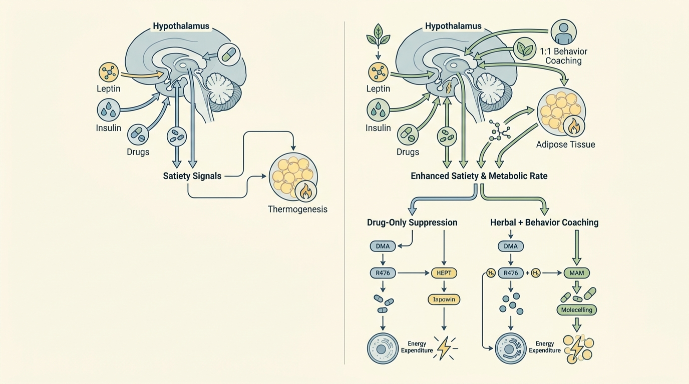

약에만 의존하는 다이어트의 한계, 대표원장 1:1 맞춤 대사관리로 요요 리스크 낮추기
인체는 체중이 감소하면 생존을 위해 기초대사량을 낮추는 ‘적응성 열생성 감소(Adaptive Thermogenesis)’ 반응을 일으킨다. 약물이나 한약 단일 성분만으로는 이러한 대사 적응 기전을 극복하기 어려우며, 기초대사량을 직접 자극하는 정교한 한약 처방과 의사 주도의 1:1 행동수정 코칭이 병행되어야 대사 정체기를 넘어 지속 가능한 체지방 감량을 도모할 수 있다.
1. 약에만 의존하는 다이어트의 한계와 요요 방지를 위한 행동수정 요법의 중요성
체중 감량 초기에는 식욕억제제나 특정 보조 성분 섭취를 통해 단기간 내 체중이 감소하는 양상을 보이나, 인체는 대사 항상성(Metabolic Homeostasis)을 유지하기 위해 기초대사량(Basal Metabolic Rate, BMR)을 스스로 낮추는 방향으로 반응한다. 이러한 현상을 적응성 열생성 감소(Adaptive Thermogenesis)라고 부르며, 이는 동일한 열량을 섭취하더라도 신체가 소모하는 에너지량이 점차 줄어들어 체중 감량이 정체되는 이른바 ‘다이어트 플라토(Plateau)’ 상태를 유발하는 핵심 생리학적 원인으로 알려져 있다.
특히 식욕억제 약물이나 단일 보조 성분에만 의존하는 요법은 약물 복용을 중단하는 즉시 억제되어 있던 식욕 신호가 급격히 재활성화되면서 체지방이 재축적되는 요요 현상을 동반하는 경우가 많다. 이는 약물이 시상하부의 식욕 조절 중추에 일시적인 신호 억제만을 가할 뿐, 저하된 기초대사량 자체를 근본적으로 회복시키거나 생활습관 자체를 교정하는 기전을 담보하지 못하기 때문이다. 따라서 단일 약물 요법만으로는 장기적인 체중 유지가 구조적으로 어렵다는 학술적 한계가 지속적으로 제기되고 있다.
이러한 대사적 한계를 보완하기 위해서는 저하된 대사율을 다시 끌어올리는 한약 처방과 함께, 환자 개인의 식습관 및 활동량 패턴을 직접 교정하는 행동수정 요법(Behavior Modification Therapy)이 병행되어야 한다. 단순히 데이터를 기록하는 자가 모니터링 방식보다, 임상 전문가의 직접적인 1:1 개입이 결합될 때 대사 적응 현상을 극복하고 요요를 방지하는 데 보다 실질적인 기여를 할 수 있다는 점이 여러 임상 연구를 통해 뒷받침되고 있다.
2. 불필요한 포장 거품을 뺀 가성비 구조와 대표원장 1:1 카톡 밀착 케어 시스템

바디올핏 다이어트 프로그램(대사교정 프로토콜)은 체중 관리에 실질적으로 기여하는 핵심 요소가 무엇인지에 대한 학술적 분석을 토대로, 자원 배분의 우선순위를 재구성한 구조를 채택하고 있다. 비만 관리에 있어 부가적인 패키징이나 화려한 마케팅 요소보다, 기초대사량을 직접적으로 자극하는 한약 조제와 대표원장이 직접 수행하는 1:1 임상 행동수정 코칭이 핵심 개입 변수라는 점에 집중하여 프로그램을 설계하였다.
이러한 접근은 단순히 비용을 절감하는 것을 목적으로 하지 않으며, 오히려 불필요한 부가 서비스에 소요되는 자원을 핵심 진료 행위, 즉 개인 맞춤형 한약 조제와 밀착형 1:1 카카오톡 상담 시스템에 집중적으로 재배치함으로써 진료의 질적 밀도를 높이고자 하는 전략에 해당한다. 대표원장이 직접 환자의 식단, 수면, 활동 패턴 데이터를 검토하고 매일 즉각적인 피드백을 제공하는 구조는, 표준화된 디지털 알림이나 자동화된 메시지 발송 방식과는 질적으로 구분되는 임상적 개입 강도를 지닌다.
이와 같은 대사교정 프로토콜은 시상하부의 식욕 신호 전달 체계를 조절하는 한약 처방과 함께, 환자가 겪는 심리적 요인 및 생활습관상의 병목 지점을 실시간으로 교정해 나가는 밀착형 1:1 케어를 동시에 제공한다[2]. 이는 단발성 보조 성분 섭취나 비대면 알고리즘 피드백만으로는 도달하기 어려운 지속가능한 생활습관 변화를 유도하기 위한 것으로, 장기적인 체지방 감량 유지 및 요요 방지라는 임상적 목표에 보다 부합하는 접근법으로 평가된다.
| 비교 항목 | 단순 약물/성분 의존 다이어트 | 1:1 밀착 행동수정 케어 (바디올핏) |
|---|---|---|
| 개입 방식 | 단일 성분·약물 섭취 위주 | 맞춤 한약 처방 + 대표원장 1:1 코칭 |
| 대사 적응 대응 | 기초대사량 저하 시 대응 기전 부재 | 대사율 증진 처방으로 열생성 보완 |
| 피드백 방식 | 비대면 알고리즘·자동 메시지 | 대표원장 직접 카톡 실시간 밀착 관리 |
| 요요 방지 전략 | 중단 시 식욕 재활성화 위험 | 생활습관 교정으로 재발 위험 완화 |
| 비용 구조 | 부가 패키지 다수 포함 가능 | 핵심 진료 자원에 집중된 가성비 구조 |
임상 연구에 따르면 표준화된 디지털 피드백만으로는 6개월 시점의 체중 감량 격차를 유의미하게 만들어내지 못한 사례가 보고되었다. 반면 초기 1:1 대면 상담이 공통된 감량 효과의 핵심 기반으로 작용했을 가능성이 제시되며, 이는 직접적인 임상 코칭이 대사 적응 극복에 본질적인 개입 요소일 수 있음을 시사한다.
3. 약물 단독 요법의 대사 적응 한계와 의사 주도 1:1 행동수정 결합 한방 치료의 요요 방지 기전 분석 관련 학술 임상 논문 분석
단일 보조 성분이나 단독 개입 방식이 체중 감량에 미치는 영향에 대한 여러 학술 연구는, 특정 성분 하나만으로는 임상적으로 의미 있는 수준의 대사 개선을 이끌어내기에 명확한 생리학적 한계가 존재함을 일관되게 보여주고 있다. 45건의 무작위 위약 대조 시험을 통합 분석한 메타분석 연구는 단일 보조 성분 섭취가 체중, 체질량지수 및 허리둘레 감소에 통계적으로 유의미하지만 상대적으로 미미한 수준의 효과만을 나타냈다는 점을 실증적으로 규명하였다. 이는 특정 단일 성분 의존 요법만으로는 비만 인구에서 임상적으로 체감 가능한 수준의 체지방 감소를 유도하기에 생리학적 한계가 명확히 존재함을 시사한다.
특히 해당 연구에서 유의미한 효과를 얻기 위해 12주 이상의 장기간 개입과 상당한 고용량 섭취가 요구되었다는 서브그룹 분석 결과는, 단독 요법이 대사적 문턱값(Threshold)을 넘어서기 위해서는 상당한 시간과 용량 조절 부담이 수반됨을 보여준다[1]. 이는 단일 한방 성분이나 보조식품 단독 사용보다, 기초대사량을 직접적으로 자극하는 정교한 한약 처방과 결합된 통합적 대사 교정 접근법이 요요 방지 및 지속적인 체지방 감량에 더 효율적일 수 있다는 학술적 근거를 제시한다.
한편 행동수정 개입 방식의 효과를 검증한 다른 무작위 대조 임상시험에서는, 단순 자가 모니터링 대비 맞춤형 스마트폰 앱 피드백이 추가되었더라도 6개월 시점에서 유의미한 체중 감량 격차를 만들어내지 못했다는 결과가 보고되었다. 이는 단순 행동 데이터 트래킹 기술이나 비대면 알고리즘 피드백만으로는 대사 적응을 극복하고 지속가능한 감량을 담보하기 어렵다는 학술적 한계를 보여준다. 오히려 초기 90분간의 1:1 대면 상담이 두 그룹 모두에서 공통된 체중 감량 효과의 핵심 기반으로 작용했을 가능성이 제시되었으며, 이는 대표원장의 직접적인 1:1 임상 행동수정 코칭이 부가적인 디지털 패키지보다 기초대사량 유지 및 요요 방지에 더 본질적인 개입 요소일 수 있음을 학술적으로 뒷받침한다.
이와 같은 두 편의 연구 결과를 종합하면, 자원을 핵심 한약 조제와 밀착 1:1 클리니컬 코칭에 집중하는 전략이 불필요한 보조 서비스나 단독 성분 의존 요법보다 비용 효율적이면서도 대사교정 및 요요 방지 측면에서 더 본질적인 대안이 될 수 있음을 시사한다. 바디올핏 다이어트 프로그램(대사교정 프로토콜)은 이러한 학술적 근거를 바탕으로, 기초대사량을 증진시키는 한약 처방과 대표원장 주도의 1:1 행동수정 코칭을 결합한 비수술적 대사 보존 치료 선택지 중 하나로 임상 현장에 적용되고 있다.
4. 바디올핏 다이어트 프로그램의 1:1 맞춤 생활습관 교정 수칙
대사 적응 현상을 극복하고 요요 재발 위험을 낮추기 위해서는 진료실 내 처방만으로는 부족하며, 일상 생활 전반에서 지속 가능한 습관 교정이 병행되어야 한다. 첫째, 매 끼니 단백질 섭취 비율을 우선적으로 확보하여 근손실(Sarcopenia)을 방지함으로써 기초대사량이 급격히 저하되는 것을 억제해야 한다. 근육량 감소는 곧 기초대사량 저하로 직결되므로, 체중계 숫자에만 집중하기보다 체성분 변화를 함께 모니터링하는 접근이 필요하다.
둘째, 극단적인 저열량 식단을 단기간 유지하는 방식은 단기적으로는 체중 감소를 보일 수 있으나, 신체가 이를 생존 위협 신호로 인지하여 적응성 열생성 감소를 더욱 가속화할 위험이 있다. 따라서 무리한 절식보다는 대표원장이 설계한 개인별 열량 및 영양소 배분 계획에 따라 점진적이고 지속 가능한 식이 조정을 진행하는 것이 대사교정 측면에서 더 안정적인 전략으로 평가된다.
셋째, 1:1 카카오톡 밀착 관리를 통해 일일 식단 사진과 활동량 데이터를 대표원장에게 직접 공유하고 즉각적인 피드백을 받는 습관을 형성하는 것이 중요하다. 이는 단순한 기록 행위를 넘어, 임상 전문가의 시선으로 병목 지점을 조기에 발견하고 교정함으로써 장기적인 생활습관 변화의 실행력을 높이는 핵심 기전으로 작용한다. 이러한 통합적 접근이 결합될 때, 약물이나 한약 단독 요법이 지닌 대사 적응의 한계를 넘어 보다 안정적인 체중 유지가 가능해진다.
💡 바디올 임상 노트: 바디올한의원의 누적 1:1 생활습관 교정 진료 경험을 통해 관찰되는 약물 의존 극복 및 지속 가능한 대사 유지 경향은, 인용된 학술 연구[2]에서 제시된 초기 1:1 대면 상담 기반의 행동수정 개입이 자동화된 디지털 피드백보다 체중 감량 유지의 핵심 기반으로 작용한다는 기전과 임상적으로 궤를 함께합니다.